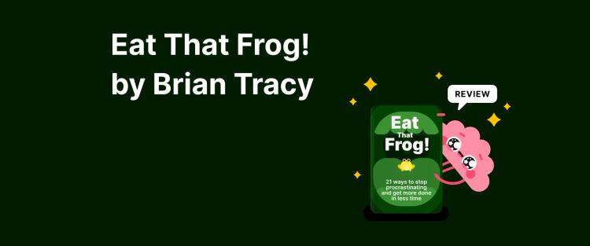
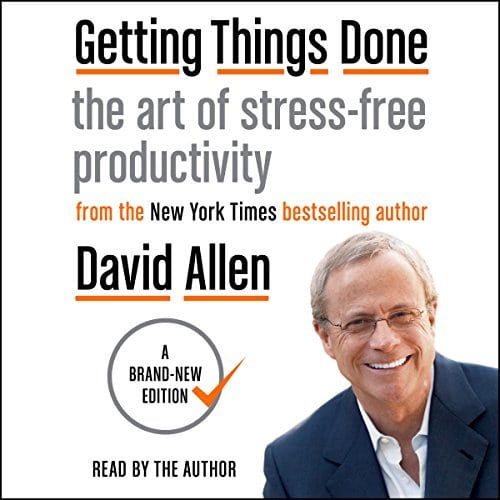

Library › Eat That Frog! vs Getting Things Done
Eat That Frog! vs Getting Things Done: Which Should You Actually Read?
Both books live on the same shelf: Productivity. Both are free to read here, in full, right now. Eat That Frog! (2001, Brian Tracy) argues: Your 'frog' is the biggest, most important task you're most likely to procrastinate on. Eat it first… Getting Things Done (2001, David Allen) argues: Capture everything, clarify the next action, and trust the system - a mind like water responds perfe…

Eat That Frog!
Tracy's premise is Mark Twain's joke turned operating system: if the first thing you do each morning is eat a live frog, nothing worse can happen all day. Your frog is the task with the greatest positive impact on your life - and precisely the one you avoid. T
READ EAT THAT FROG! FREE →
Getting Things Done
Allen's insight, decades ahead of the burnout era: stress doesn't come from having too much to do - it comes from OPEN LOOPS: the hundreds of un-clarified commitments ('mom's birthday... the leaking tap... that email') that your brain keeps re-presenting at 3
READ GETTING THINGS DONE FREE →⚖ The Straight Answer
Read Eat That Frog! if you want 21 ways to stop procrastinating - if you must eat a frog, do it first
Read Getting Things Done if you want the art of stress-free productivity - your mind is for having ideas, n
The honest order for most readers: start with Eat That Frog! for the base, then go deeper with the other. Both summaries are free, no paywall, in 26 languages.
Every summary is free: lessons, examples, action steps, audio in your language.